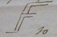

Thomas Beddoes to James Watt, 23 September 1794
Dear Sir
Engravings. I have been making enquiry & find I can get the plates well worked at Bristol – If they cannot be done in a superior style at Birmingham, they may as well come hither –
Oxygene air. I am glad you have at last manganese from Mr Reynolds. If you execute the idea in your last of discovering a more eligible method of procuring ox: air; it may come in time, for I will keep the last pages of your communications standing till the plates are worked off, that I may be able to insert any thing further & they will not be worked off in less than 9 days – it seems.
Pipe. It appeared to me at Painswick that if the pipe bent at right angles from the refrigy to the Hc Bellows was raised an inch it wd be better, for in whirling the wooden agitator, the water is thrown into that pipe [sketch of pipe] the apparatus works admirably – so does mine.
Pot. Capper’s pot is come to hand – wd there be any inconvenience if the neck was a little wider – one can hardly get in one’s hand to take it. – Capper gets wonderful relief; has good nights & no night sweats, yet he cannot recover.
Vitriolic acid – can I not save the apparatus
Writing letters lexographically. You must know that this was a late idea of my wife’s & that it has been commended by several persons, as saving words employed in transition from subject to subject & as contributing to clearness.
I am
Dr Sir
Ever yours
Thomas Beddoes
23 Sepr
Mall Clifton
Address: James Watt Esq / Heathfield / Birmingham
Endorsement: Dr — Beddoes / Sepr 23 1794
MS: LoB MS 3219/4/28/17